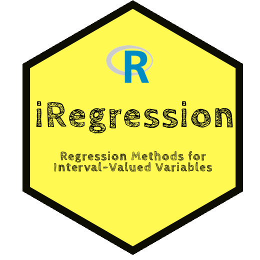

iRegression: An R Package for Regression Models with Interval Variables
2018-12-29
Preface

In real problems, it is usual to have the available data presented as intervals. Currently, it is possible to find a wide literature about statistical methods for analyzing interval data. Therefore, different approaches have been proposed to obtain a regression model for this type of data. Some of these methods study the problem itself from an optimization point of view while other regression methods take into account a probabilistic background for the dependent variable. This book presents the R package iRegression that contains functions to estimate regression models for interval-valued variables. Particularly, it is presented a generalized linear model for interval-valued variables that includes, as special cases, some regression models for interval variables. The package also provides functions to obtain the fitted values and residuals for the estimated models as well as goodness-of-fit measures and examples of real interval data sets.